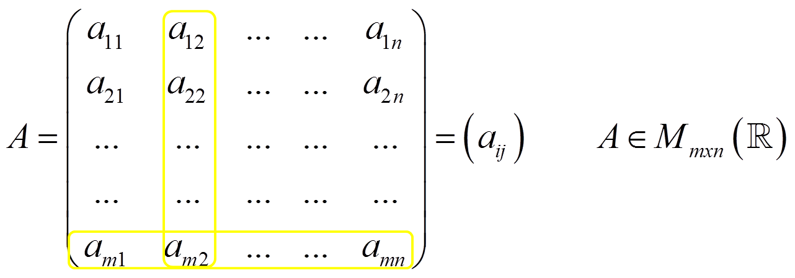
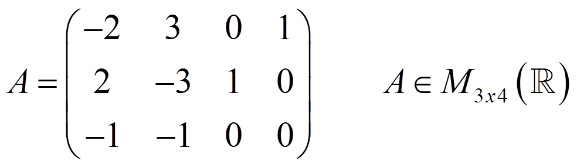
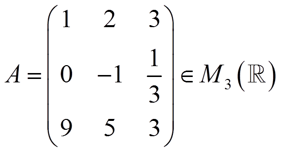
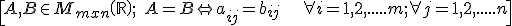
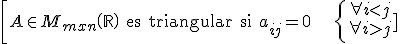
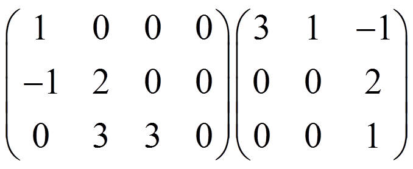
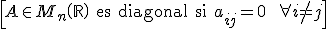
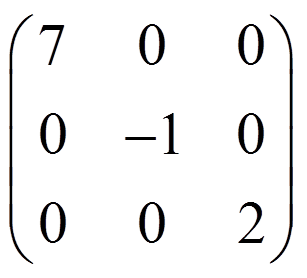

Una matriz de m filas y n columnas (mxn) es una tabla ordenada de números de la forma:

2ª columna↑ ↑ mª fila
Ejemplo:

Si la matriz tiene el mismo número de filas que de columnas, se llama matriz cuadrada

Si la matriz sólo tiene una fila o una columna, se llama matriz fila o matriz columna.
Una matriz es igual a otra si tiene la misma dimensión y los mismos términos

Una matriz se dice que es triangular si

\[A\in {{M}_{mxn}}\left( \mathbb{R} \right)\text{ es triangular si }{{a}_{ij}}=0\ \left\{ \begin{align} & \forall i
Ejemplos:

Una matriz se llama diagonal si

\[A\in {{M}_{n}}\left( \mathbb{R} \right)\text{ es diagonal si }{{a}_{ij}}=0\ \ \forall i\ne j\]
Ejemplo:
